Results from the 'Leavers' survey of 101 former journalists of color conducted Feb-March 2020 to understand when and why they left the journalism industry, as race/ethnic representation and accurate coverage remains a challenge in U.S. newsrooms.
A typical Leaver profile emerged from the responses to the survey. Scroll to explore a more detailed demographic picture of all 101 respondents.
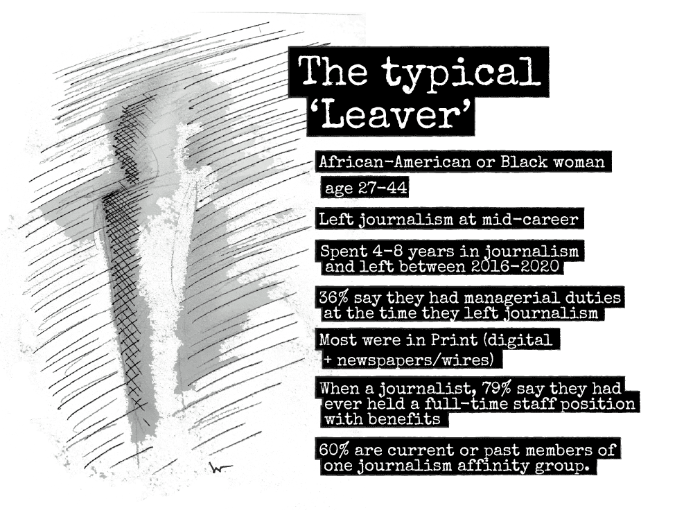To capture the race/ethnic diversity within the catch-all term, JOCs, the survey allowed respondents to self-identify from 9 provided options (below) and/or write-in a response. One respondent selected 'Prefer not to say'. Write-in descriptions were: 'Brown'; 'Puerto Rican'; 'Southeast Asian'; 'BIWOC'; 'Half white'.
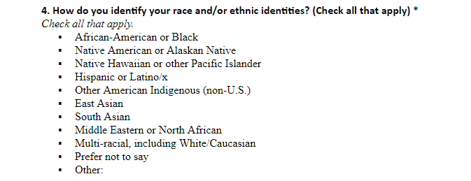The numbers below reflect respondents' chosen identities. Because of overlap they should be understood as a count of identities, not respondents. For example, 53 respondents identified as African-American or Black (47 respondents selected AA/Black, only and another 6 selected AA/Black and other race/ethnic identities). This is a sampling of the communities, culture and heritage represented by these former journalists.
| # | Selected identity | |
|---|---|---|
| 53 | - | African-American or Black |
| 25 | - | Hispanic or Latino(x) |
| 11 | - | Multi-racial, including White/Caucasian |
| 10 | - | East Asian |
| 6 | - | South Asian |
| 6 | - | Middle Eastern or North African |
| 4 | - | Native American or Alaskan Native |
| 2 | - | Southeast Asian |
| 1 | - | "Brown" |
| 1 | - | "BIWOC" |
| 1 | - | Other American Indigenous (non-U.S.) |
| 1 | - | Native Hawaiian or other Pacific Islander |
| 1 | - | "Puerto Rican" |
| 1 | - | Prefer not to say |
81% of Leavers are women; it is unclear why they so heavily dominate the sample (see Methodology for a description of survey outreach).
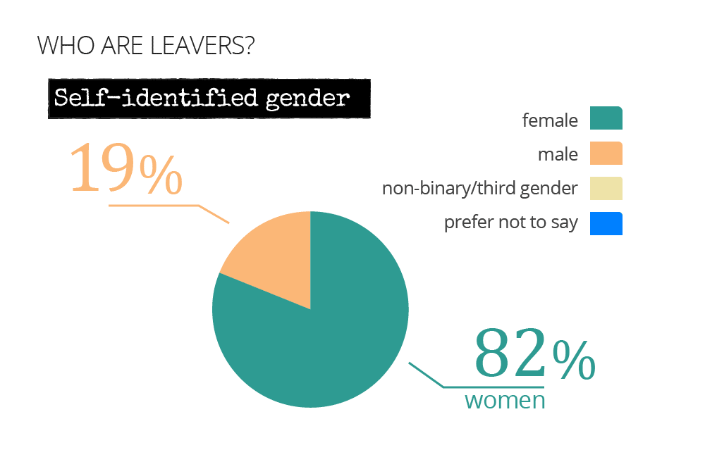The vast majority of survey respondents were in their prime working years, ages 27-44.
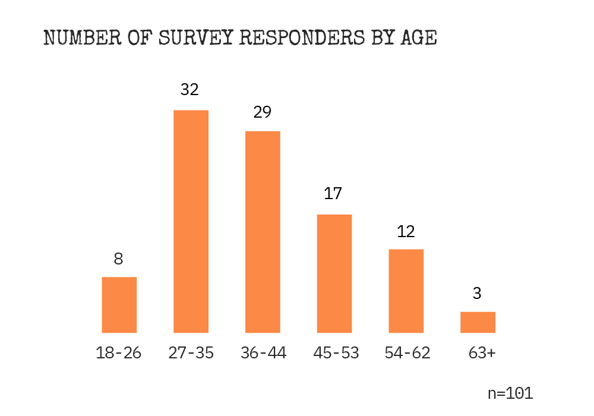Most respondents (59, 58%) worked primarily in Print (digital + newspapers/wires), followed by Broadcast (28, 28%) and then Digital only (14, 14%). Among Digital Only respondents, the initial year of first job in journalism was 2002. Among Broadcast respondents, the initial year of first job in journalism is 1990. Of 19 total male respondents, 17 primarily worked in Print.
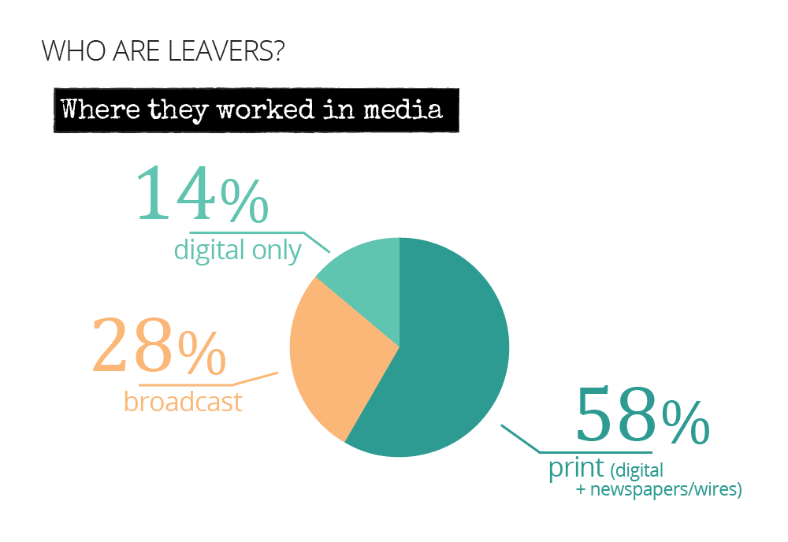Leavers entered journalism via internships, etc as early as 1966, with the first female Leaver entering journalism in 1980. Below shows the years when they left journalism. Most Male respondents (63%) spent 9-15+ years in the field. For women, most worked 4-8 years (44%) followed by 15+ years (23%) and 9-14 years (22%).
At the time they left journalism, 70% of Leavers were on staff. Of the 30 who'd been freelancers, nearly half (11) say they were under-employed at the time they took the survey. All 11 are women. (Of 101 respondents, nearly one-third (29) say they were either under-employed or unemployed at the time they took the survey).
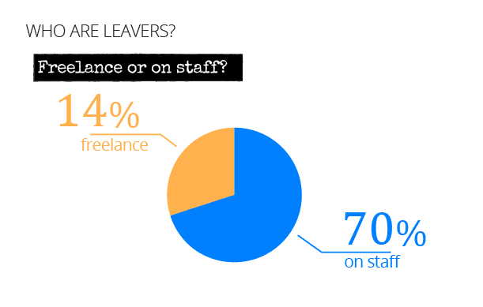Of the 21 respondents who said they had never been employed full-time with benefits while journalists, most (62%) had spent 4-8 years in the field.
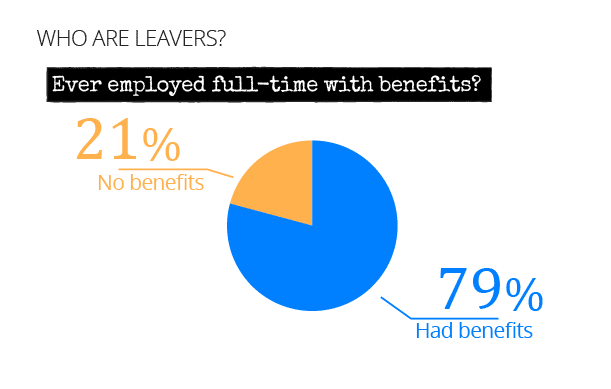Most Leavers (65%) left journalism because "they decided to"—not because they couldn’t find sufficient or any work; company downsizing, restructuring or buyout; nor retirement. For more on why, click [Tab 3].
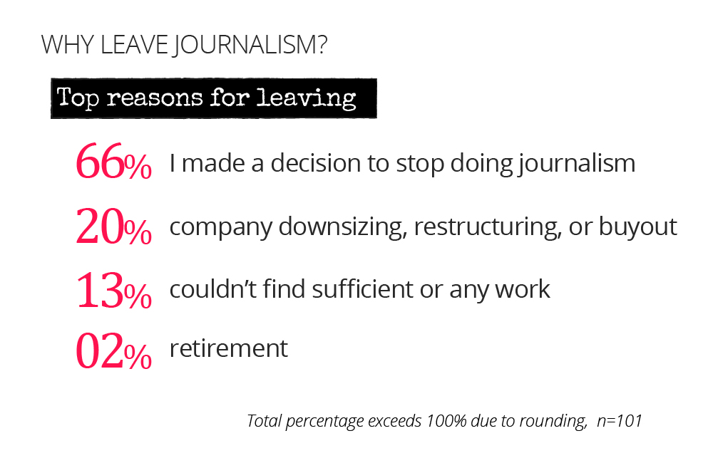Call to action
Sharing and contact icons here
Journalism identity is "sticky". Despite their work experiences and having left the industry anywhere up to 24 years ago...
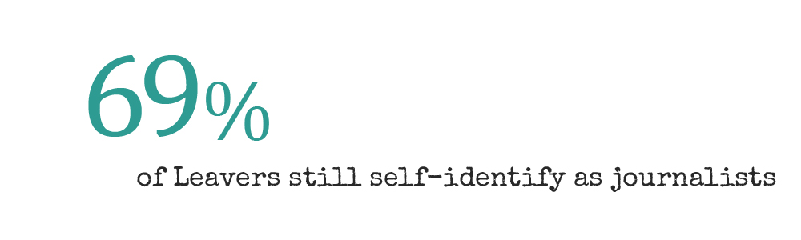So, what is it about journalism that encourages this high level of self-identification? "Viewing journalism as a public service" was the top factor motivating Leavers in every age range to become journalists...
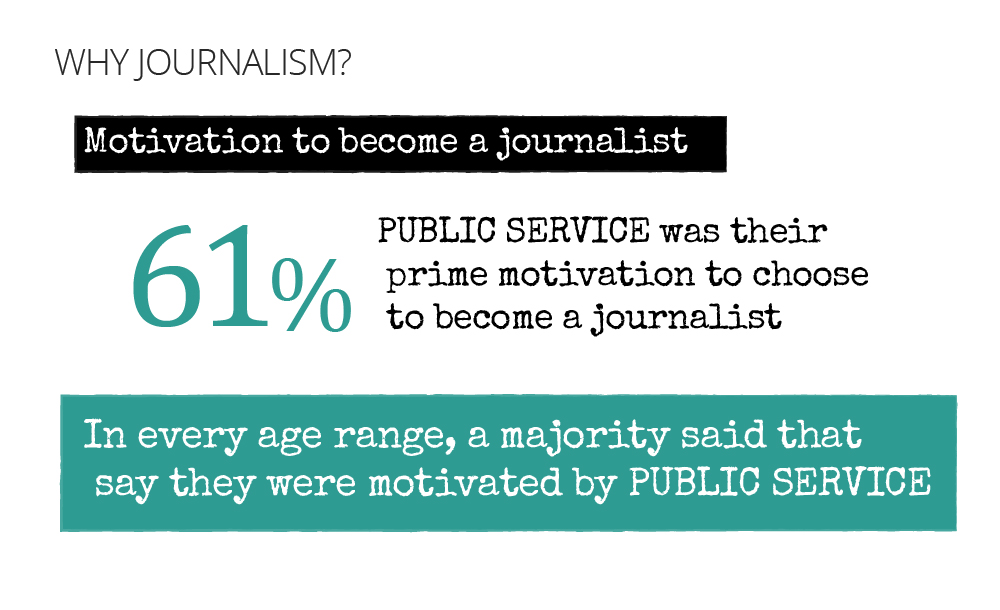... followed by the work of journalism. The 4th most popular factor among former JOCs was the "opportunity to shape coverage of race/ethnic group".
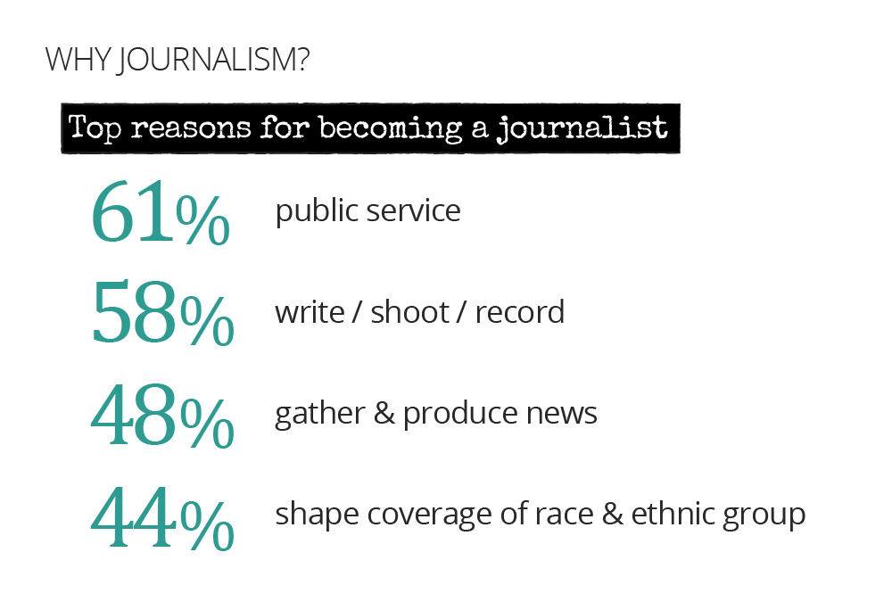And although most Leavers (57 respondents) viewed journalism as a "Calling" or "Mission" at the start of their careers, by the end, most came to view it as a Job or worse...
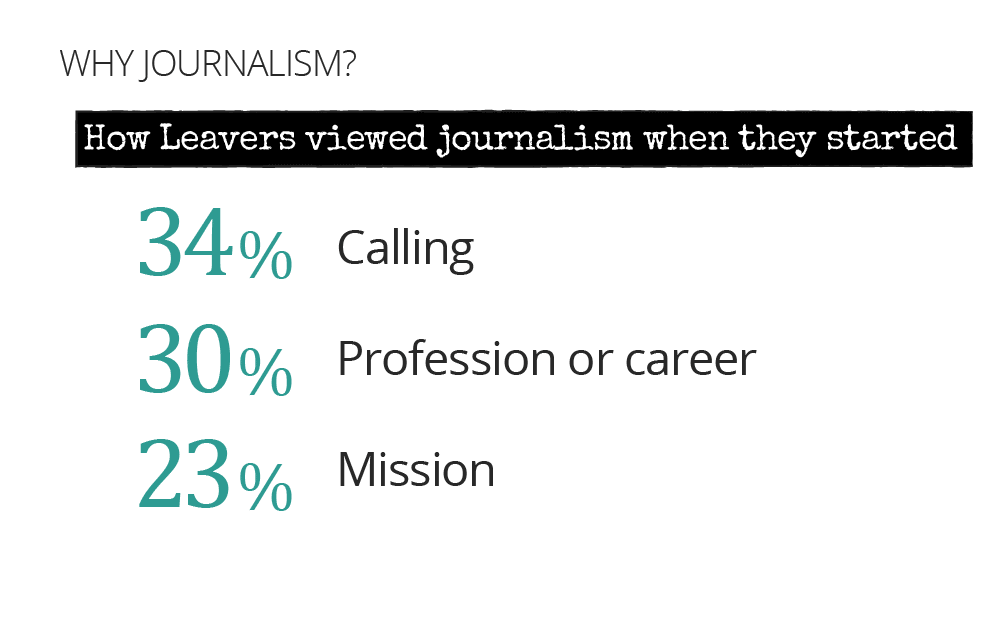Many more respondents found the 5 provided options insufficient to describe their view of journalism towards the end of their careers. Among those who wrote in responses, the most dire reflections came from Leavers who'd primarily worked in Broadcast followed by Digital only.
Recall that most respondents (65%) left journalism because they decided to—not because they couldn’t find sufficient or any work, nor because of company downsizing, restructuring or buyout; nor retirement. To better understand their reasons, the survey asked respondents to rank Newsroom + Industry influences on their decision to leave, as well as Life Circumstances. Scroll down to hear from Leavers in their own words.
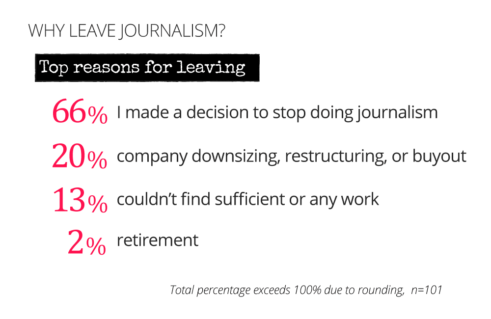 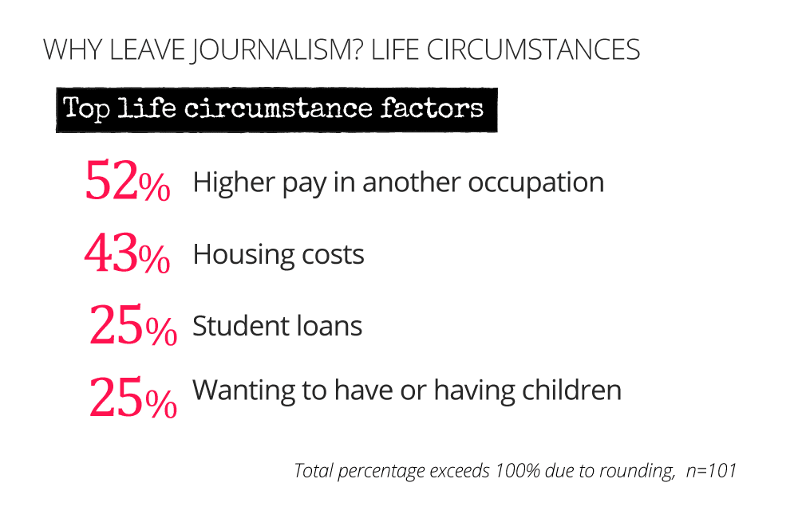80 Leavers shared why their views of journalism changed over the course of their careers. These responses are grouped by dominant themes.
"It was clear management didn’t care about “journalism.” Just ratings, clicks, sensationalism... Hours were bad, pay was bad, management was horrible. Expectations were unrealistic and ridiculous. I still maintain that the only people still in the business just want to be on television. I resent my experience in news so much. Sometimes I wish I’d studied something else."
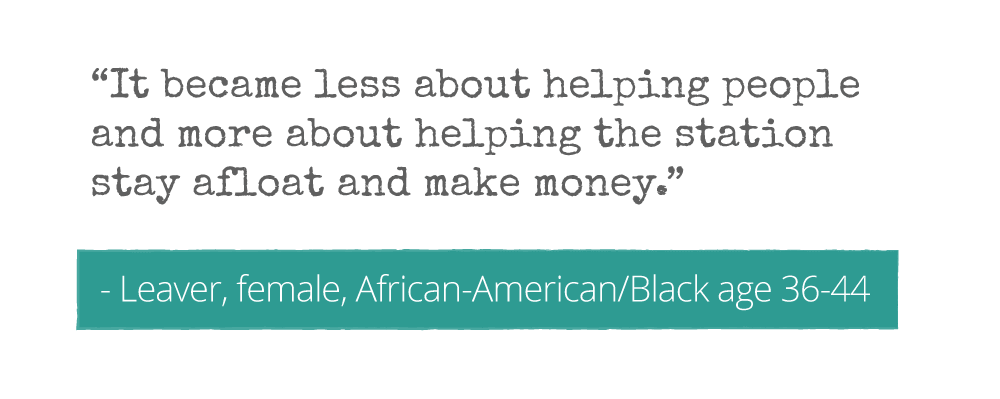"“I felt like my talents were ignored or sidelined in favor of clearly less talented or qualified non-black journalists, routinely. ...I rarely got the support or mentorship needed to thrive…and it left me deeply disheartened that in the upper echelons of journalism, diversity can often equate to tokenism, and that, regardless of your pedigree (two degrees from top-tier schools, including an Ivy League j-school), that blackness can be as much an asset to [managers] in the newsroom as a liability…”
"“…I often felt like I was being preyed on. I trusted white, female bosses to be my allies, but in the end, it felt like they tore my heart out and stomped on it. I wasn't allowed to own my ideas -- they were theres[sic] and they took them without the value of years of my work that went into formulating them. I'm still a bit heartbroken, but ready to come back to journalism…
"It was draining... constantly not being heard when I would stick up for people of color, dealing with white managers who were disconnected from the city, also dealing people in power who weren't qualified... It wasn't fun, I felt like I wasn't making a difference..."
"I was paid a lot less than white men and sick of it."
"My view of journalism as a calling has never changed. I teach future journalists. But as a woman of color my ability to advance in the profession was limited."
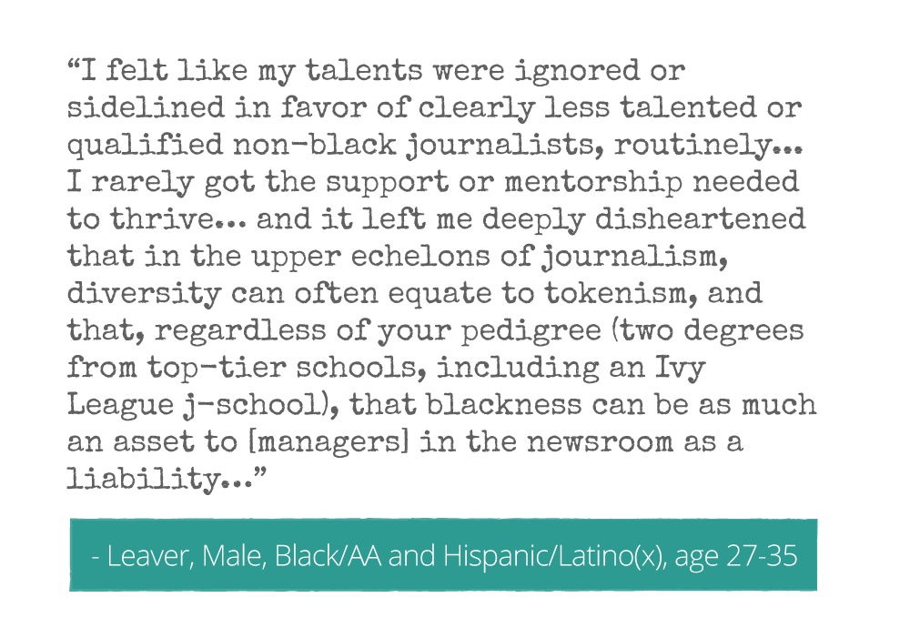 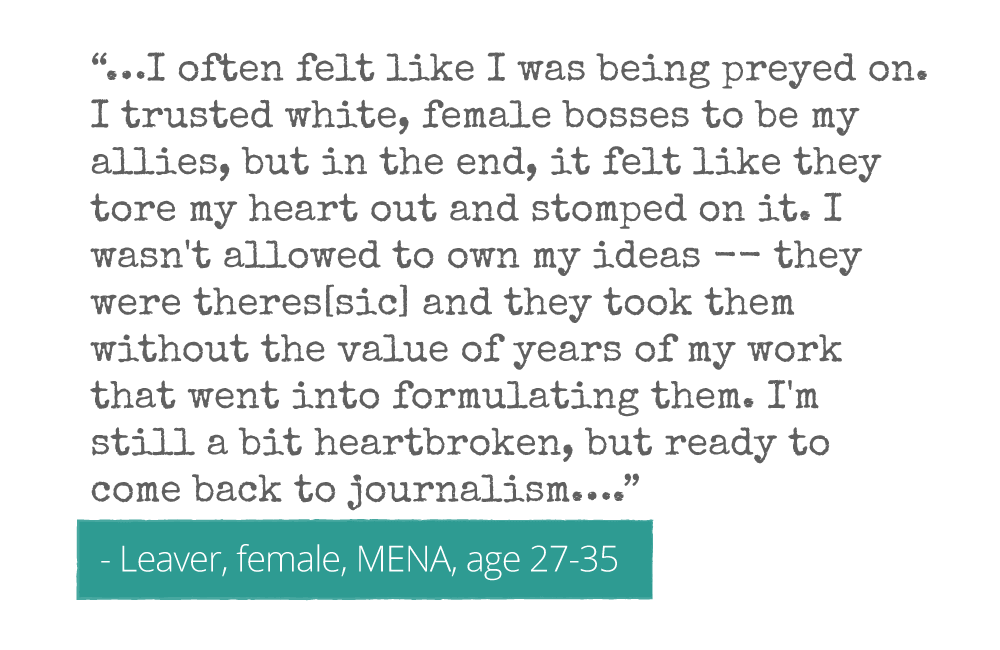"“[I was a] contract worker who was illegally denied overtime, and used as a fulltime employee, complete with responsibility of managing/hiring/firing employees, all with no status or safety. I was unceremoniously cut at the end of one of my many, many ""3-month contracts"" — but not before my managers attempted to cut my pay by 40%. … Jumping ship to a different company would have meant significantly less pay (and often the same abuses), a trade-off I just wasn't willing to make.”
"I saw how the donuts were made in the business of digital media — a very disillusioning experience. Also experienced a lot of exploitation and outright illegal treatment from an employment-law standpoint (as have many many of my colleagues)."
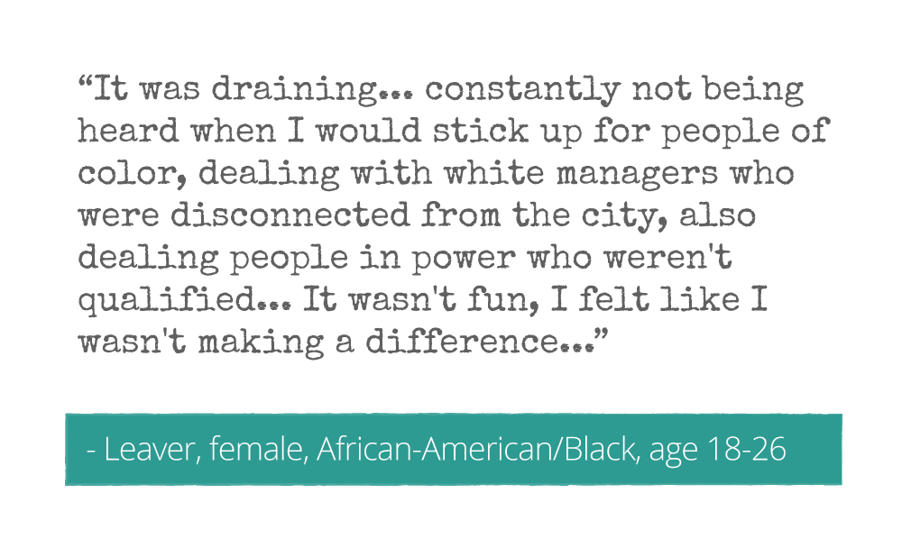 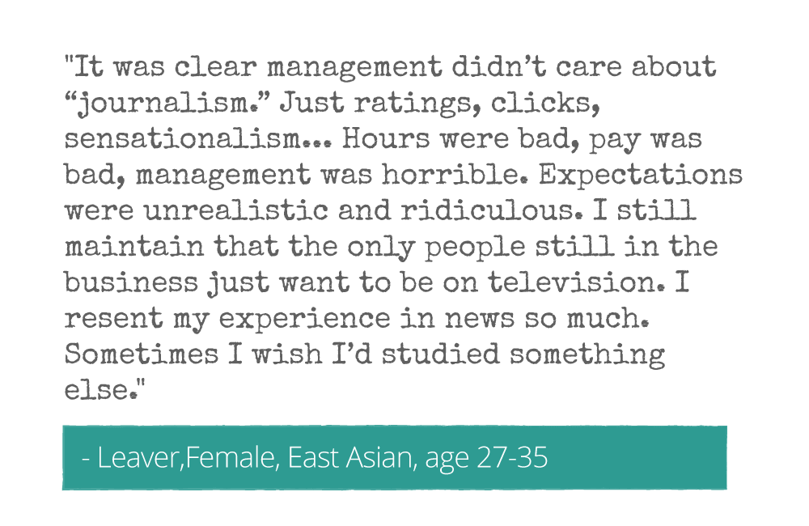“…I realized I was at a severe disadvantage in my last two years of university when I couldn’t afford to go on elaborate international reporting trips or take a summer/semester off to another city to do an unpaid internship. I also acknowledged the lack of mentorship from professors because of these and other contributing circumstances. Once I graduated in 2013, I couldn’t find any full-time work and freelanced for as long as possible. …I realized that although a younger me viewed this career as a calling, by the end, it was just an unsustainable job that I needed to get out of if I wanted to ever advance in my career and life.”
"The financial element was difficult as I did not receive financial support from family. I began to notice those who excel are white from privileged backgrounds which allowed them to only focus on journalism because they were financially secure."
"""I honestly believed all the things people said about it being a special line of work you're called to. I was told many things and being young and desperate to fit in somewhere, I didn't acknowledge the red flags that this was not a good way to make a living, despite how badly the industry claimed to need people like me (black women with bright ideas).”

“By the time I left it felt like the industry was a ticking time bomb. Who would uphold the fifth estate and who could afford to take the vow of poverty that is being a journalist? (As a single mom, I couldn’t face the uncertainty in top of the pay ceiling.)”
"The industry was becoming harsher, expecting more with less time and money, becoming more about clicks than conduct and was ultimately a stressful burden crippling my mental health."
Leavers have an incredible wealth and breadth of experience. Here are their thoughts on what it would take to retain JOC:
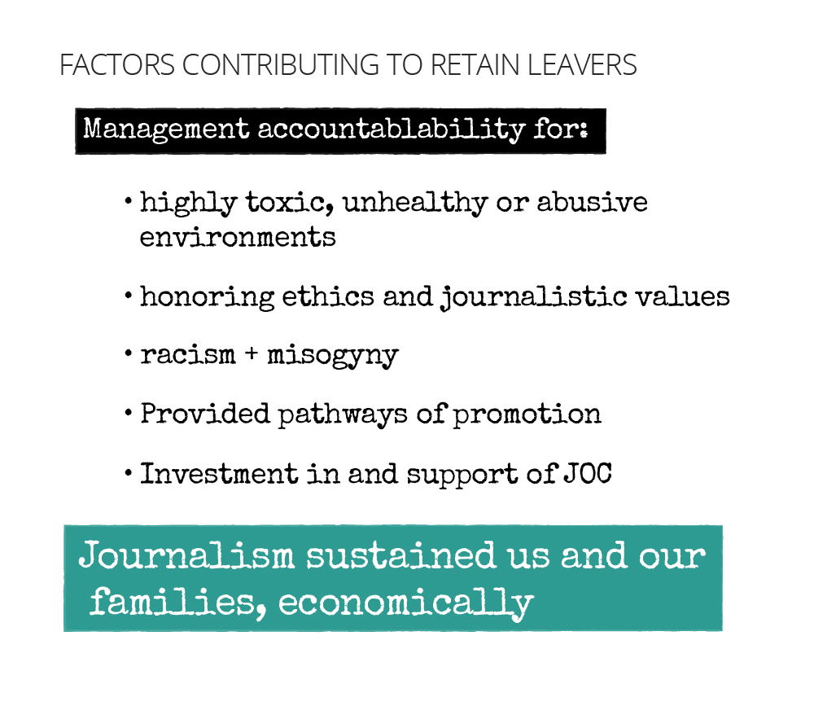95 Leavers responded to the question, what, if anything, would have stopped you from leaving your occupation as a journalist? Below is a summation of the dominant replies. JOC Leavers would have stayed if...
Series of reasonsIt is striking that more than one-third of Leavers say they had managerial duties at the time they left journalism. Most (25) left journalism between 2016-2020, and most (27) say they left journalism at or after their mid-career point (see below). Leaver managers are ages 27-44 and more non-Black than the overall sample. Of 19 total male respondents, 9 say they had managerial duties at the time they left journalism.
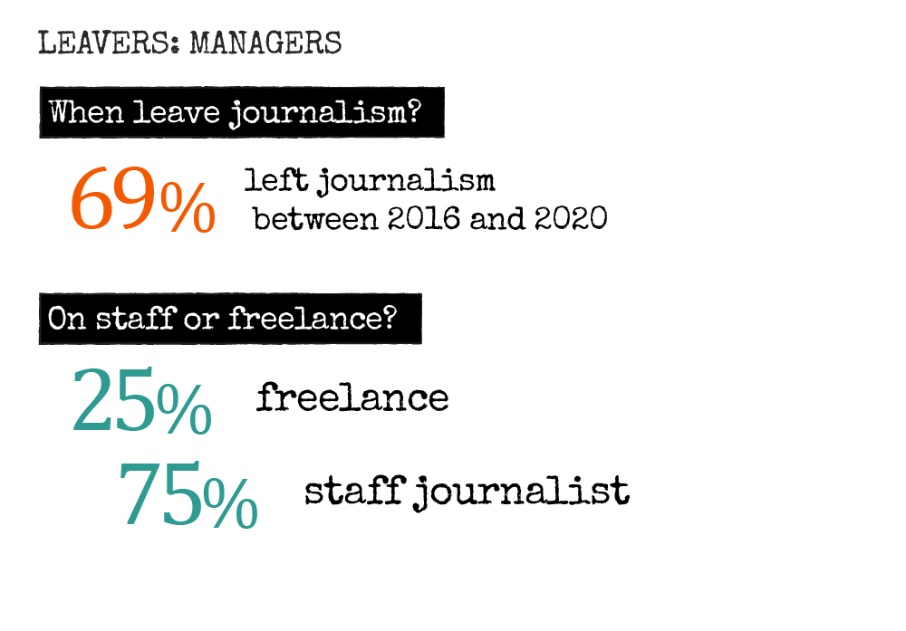Leaver managers had slightly different reasons for leaving journalism when compared to the rest of the sample. Among managers, Newsroom Mismanagement ties with Workplace Stress as their top influences, and Little advancement and Newsroom Diversity make their cut.
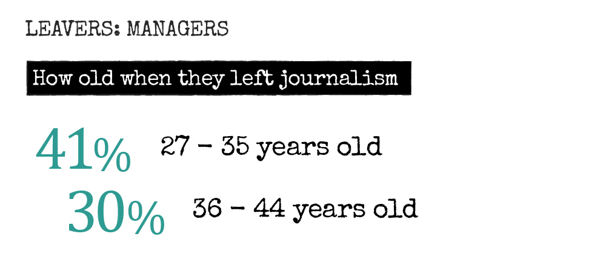 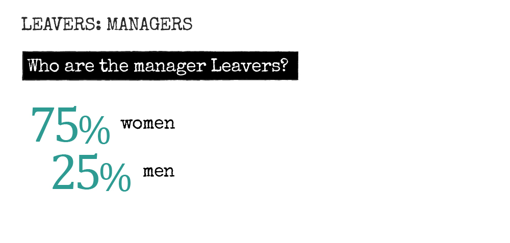Leavers Methodology
Leavers is a 44-question online-only survey that opened for responses February 19-March 9, 2020. A "Leaver" was defined in the survey description to respondents as someone who had, "left the occupation after any period of time, for any reason, including those who moved into non-journalist occupations within the journalism industry."
Recruiting
This project recruited respondents using the snowball sampling method, along with targeted, sometimes repeat outreach to the affinity organizations—NAJA, NLGJA, JAWS, NAHJ, AAJA, SAJA, NABJ, and AMEJA—who then shared a form letter invitation to participate in the survey. (Outreach to AMEJA started later than the other affinity groups; I wasn’t aware of its existence when the survey went public) The survey was initially shared through Carla Murphy’s private accounts via Facebook, Twitter, JOC slack (in relevant channels), and LinkedIn. On request, JOC influencers (i.e. Nikole Hannah-Jones at the New York Times, Arun Venugopal at WNYC, Gustavo Arellano at the LA Times) spread the word to their communities, typically via RTs on Twitter or e-mail.
SQ44, the last (and optional) question on the survey, asked respondents to suggest former JOCs by adding their e-mail addresses. Twelve (12) respondents entered e-mail addresses. The survey was sent to all 12. None of those e-mail addresses took the survey.
Altogether the survey was directly shared to about 60 individuals (representing various racial/ethnic communities in journalism, foundations, academia, and communications) and group lists, including: Labor communicators listserv; pcdc listserv; What’s Your Plan B? FB page; Life after Journalism FB page; etc. (Will share full list on request)
Respondents
n= 101. There were 102 respondents, but during data cleaning it was discovered that one respondent was still in journalism. That response was excluded from analysis.
Questions
For ease of analysis, most questions were quantitative and excluding write-ins for zip codes or email address, for example, 5 were substantively qualitative (see below).
The "Pathways II: Just after leaving" section was excluded from this analysis. Due to unclear question sequencing, respondents misunderstood three of the four questions in the section.
The manager’s question is SQ25, "Your last role as a journalist included managerial duties, i.e. responsible for junior staff or freelancer outcomes."It is worded to focus on duties, not a manager’s title, in recognition of a common practice within the industry of assigning job titles that may not communicate the responsibility of the workers’ duties.
The career stages question is SQ29. It is written to allow respondents to self-determine their own career stages and select one of five options: entry level; on the cusp of mid-career; mid-career; on the cusp of senior level; senior level.
Questions were often duplicated to act as internal checks on responses (for example, to triangulate reasons for "leaving").
Before finalization, survey questions went through at least three iterations with a select group of reviewers that included current journalists and media communication researchers.
Leavers’ qualitative questions
SQ15: If you answered "yes" [to still thinking of yourself as a journalist] please share your reason why.
SQ22: If your view of journalism changed from beginning to end, please share your reasons why.
SQ36: At the time, what, if anything would have stopped you from leaving your occupation as a journalist? [respondents were given the option to mark "private" if the answer related to family, illness, etc]
SQ41: Name a forward-thinking package, project, innovation, convening or person to come out of a newsroom/the industry in the past few years.
SQ42: What is the one word that best describes your work experience within newsrooms or the industry?
Strengths and Weaknesses of the Leavers project
The strength of Leavers is the breadth of experience, time spent in the industry, and the race/ethnic diversity captured by the sample. Another strength is the identity, background and track record on race and class of the person running the survey. This, along with the survey’s knowledge of the journalism career pipeline, may’ve encouraged respondents to fully and candidly reply to the qualitative questions.
The weakness of Leavers, a survey of work experiences, is that it captures neither income nor wealth information. Those questions were excluded, it was initially thought, to increase the likelihood that former JOCs would take and finish an online survey run by an individual and not an institution. Another weakness is that the "Pathways II: Just after leaving" section was excluded from analysis. This section captured key employment status information (including unemployment and under-employment and length of time) for the period immediately after leaving journalism.
large-4 medium-4 cell
How do you make a round circle with a square knife? That’s your challenge for the day. Let’s put some happy trees and bushes back in here. But they’re very easily killed. Clouds are delicate. And just raise cain. Isn’t it fantastic that you can change your mind and create all these happy things?
How do you make a round circle with a square knife? That’s your challenge for the day. Let’s put some happy trees and bushes back in here. But they’re very easily killed. Clouds are delicate. And just raise cain. Isn’t it fantastic that you can change your mind and create all these happy things?
How do you make a round circle with a square knife? That’s your challenge for the day. Let’s put some happy trees and bushes back in here. But they’re very easily killed. Clouds are delicate. And just raise cain. Isn’t it fantastic that you can change your mind and create all these happy things?
Four cell
Four cell
Four cell
Large-4